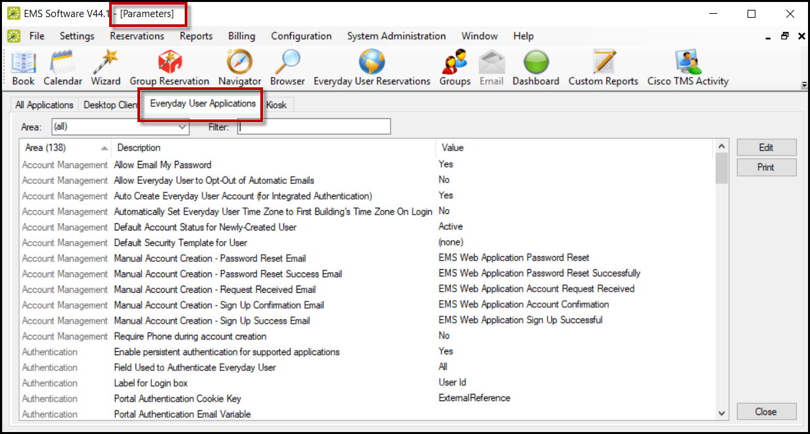

Parameters for the EMS Web App are configured in the EMS Desktop Client. As an EMS Administrator, you can access these parameters by navigating to System Administration > Settings > Parameters > Everyday User Applications tab.

Parameters for the EMS Web App